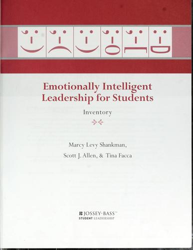

布莱恩·贝尔斯（Brian Bares）于2000年创立了贝尔斯资本管理公司（Bares Capital Management），专注于小盘股与微盘股的长期集中持股策略。《小盘股优势》出版于2011年，是贝尔斯将十余年实践浓缩为系统论述的一本著作，由威利出版社（Wiley Finance）出版。本书的核心问题是：为什么顶级大学捐赠基金和慈善基金会能够持续从小盘股中获取超额收益，而大多数机构投资者却望而却步？
全书从市场结构入手，阐明小盘股领域存在的结构性低效。贝尔斯指出，优秀的小盘股基金经理天然面临一个悖论：业绩出色带来资产规模扩大，而规模扩大又迫使他们迁移到流动性更强的中大盘领域；反之，业绩不佳者则退出行业。这一机制导致小盘股市场的研究覆盖始终稀薄，留给勤勉研究者的套利空间持续存在。贝尔斯的应对策略是集中持仓——将资本聚焦于少数深度研究的标的，而非广泛分散，这样每一只个股的超额收益才能对整体组合产生实质性影响。书中对大学捐赠基金（如耶鲁模式）的配置逻辑进行了详细分析，说明为何长期资本的提供者最适合承担小盘股的流动性溢价。
贝尔斯还系统梳理了阻碍机构资金进入小盘股领域的障碍，包括容量限制、流动性顾虑、跟踪误差约束以及机构委托人的心理偏好。书中提出，希望进入这一领域的机构需要建立不同于传统的投资政策、业绩评估标准和经理人筛选框架。他尤其强调，寻找能够长期坚守小盘股规模纪律的基金经理至关重要——这种纪律要求管理人在资产管理规模与策略完整性之间做出取舍，而大多数管理人会选择前者。
《小盘股优势》并非一本面向散户的炒股指南，而是一本写给机构投资者和基金经理的专业手册，同时也是少数能够将市场微观结构、组合构建理论与实际操作经验融合于一体的投资著作。对于任何希望理解为什么小公司股票在长期历史上跑赢大盘、以及如何系统性地将这一优势转化为可执行策略的读者，本书提供了迄今最为清晰的论证框架。